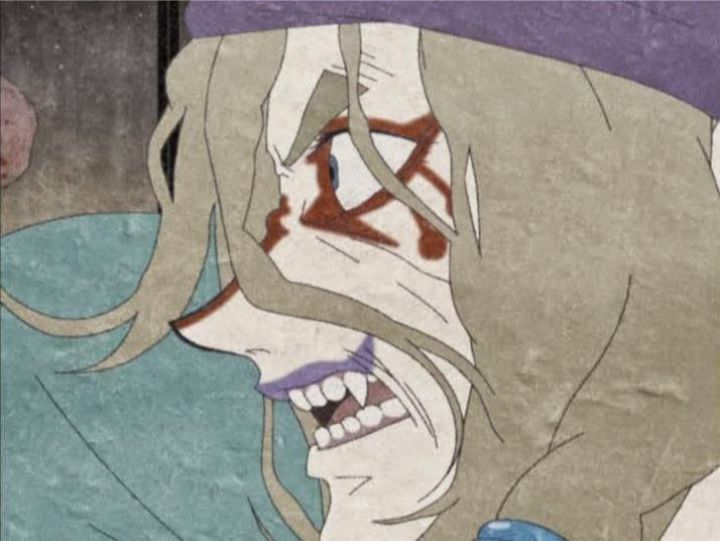

Disclaimer: the original television series "Ayakashi - Samurai Horror Tales" consisted of three arcs, each telling a standalone story. Due to availability, only the "Goblin Cat" arc is reviewed here."Ayakashi" is a strange show. It's a handful of horror tales told in episode arcs. One of the better ones is "Goblin Cat," and the format of the show made it easy to release the arcs separately in America. But it's a shame it isn't out on bluray...An old tale of a medicine man who stumbles upon a Japanese home about to send their daughter away for marriage, when a demon presence haunts and massacres them one by one. Slowly we learn the family has a dark past that justifies the haunting. It's an ok story, but not spectacular. A bit of odd humor and good characterization in the dialogue does make a difference, though.What is spectacular is those visuals. It's made to look like it was animated on old paper (presumably using computer overlay effects). And when it really gets into it, the animation is fast, fluid, poetry in motion. The character designs wern't necessarily attractive, but they were unique. And the whole thing screams of Japanese authenticity, from the environment to the costumes. Also surprisingly gruesome when it needs to be. The English dub is actually not good. I kind of got used to it, but dub haters will hate this one and stick with sub. The music is good, with a strange modern hiphop opening.Overall, you might be disappointed with this, but you might be pleasantly surprised too. If you're open to something unique in a horror story, "Ayakashi" is worth watching, and "Goblin Cat" is considered one of the best parts. If by chance you do enjoy this arc (or, since it's out of print as of 2017 in America, if you want to experience the show without actually watching this original set of episodes), consider checking out the complete spin-off show from this arc, called "Mononoke," released in 2007, only a year after the original arc was released.
- "Ani" More reviews can be found at : https://2danicritic.github.io/ Previous review: review_Aura_-_Koga_Maryuin's_Last_War Next review: review_Azumanga_Daioh